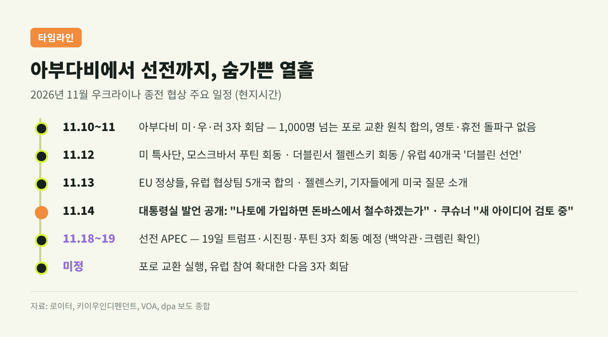
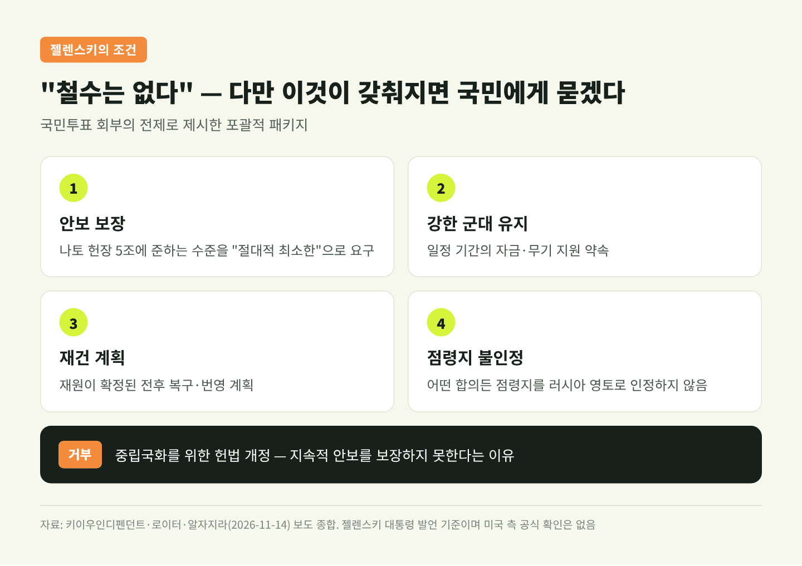
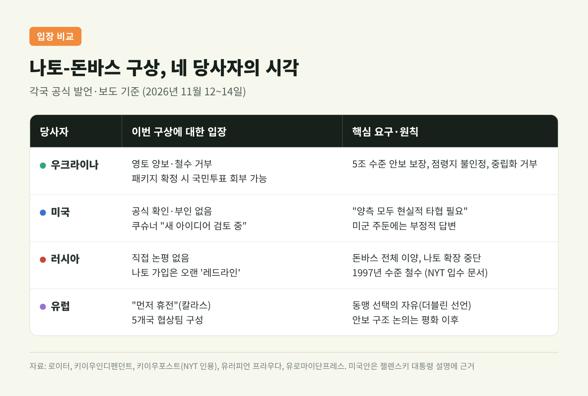
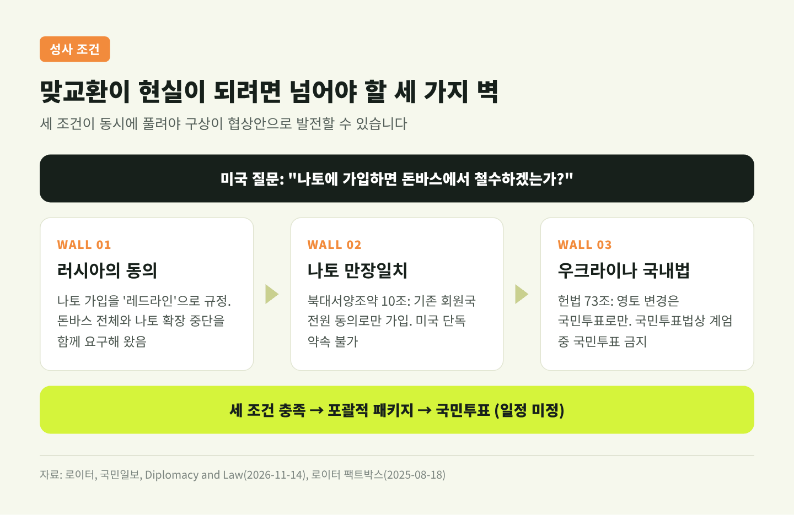
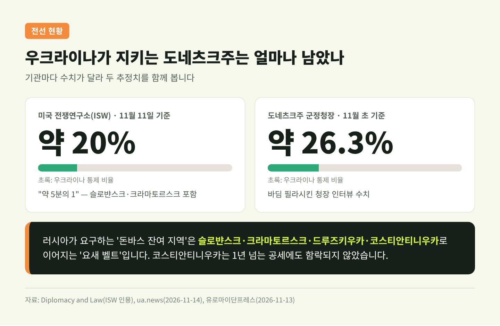

돈바스 양보와 나토 가입 맞교환, 미국 첫 타진에 남은 세 가지 벽

이번 글에서는 미국이 우크라이나에 '나토 가입과 돈바스 철수'를 맞바꾸는 방안을 처음 타진했다는 젤렌스키 대통령의 발언을 정리해 보겠습니다. 발언의 정확한 맥락, 각국 반응, 그리고 이 구상이 실제로 성사되려면 넘어야 할 조건을 차례로 살펴봅니다.
3줄 요약
- 젤렌스키 대통령은 미국 협상단이 "나토에 가입하면 돈바스에서 철수하겠느냐"고 처음 물었다고 밝혔습니다.
- 그는 영토 양보는 없다면서도, 안보 보장과 재건 자금이 담긴 포괄적 패키지가 확정되면 국민투표에 부칠 수 있다고 했습니다.
- 러시아의 '나토 레드라인', 나토 회원국 만장일치, 계엄 중 국민투표 금지라는 세 가지 벽이 남아 있습니다.
■ 무슨 일이 있었나
젤렌스키 대통령은 13일(현지시간) 기자들과 만나 미국 측의 질문을 소개했습니다. 이 발언은 14일 대통령실을 통해 공개됐습니다. 국내 일부 매체는 14일 기자회견으로 전했는데, 외신은 13일 발언·14일 공개로 보도했습니다.
그가 전한 미국 측 질문은 이렇습니다. "우크라이나가 나토에 가입한다면, 돈바스에서 철수하겠는가?"(로이터·키이우인디펜던트 보도)
젤렌스키 대통령은 나토 가입과 영토 문제가 하나로 묶여 거론된 것은 이번이 처음이라고 했습니다. "나토가 다시 의제에 올랐다"면서도, 푸틴 대통령의 신호를 고려하면 "극도로 어려운 대화"라고 덧붙였습니다.
여기서 '돈바스'는 러시아가 이미 점령한 지역이 아닙니다. 우크라이나가 아직 지키고 있는 도네츠크주 북부, 즉 슬로뱐스크·크라마토르스크·드루즈키우카·코스티안티니우카로 이어지는 이른바 '요새 벨트'를 가리킵니다.
표현의 무게도 짚어둘 필요가 있습니다. 국내 보도 제목은 대체로 '제안'이라고 썼지만, 젤렌스키 대통령 본인은 구체적인 제안이 아니라 '질문'이었다는 취지로 설명한 것으로 전해졌습니다. 그는 "구체적인 내용이 필요한데 아직 없다. 모두 논의 중"이라고 말했습니다.

■ 젤렌스키가 내건 조건
젤렌스키 대통령의 답은 두 겹입니다.
첫째, 우크라이나군은 돈바스에서 철수하지 않습니다. 그는 "이곳은 우리 국민의 땅이지 부동산이 아니다"라고 말한 것으로 보도됐습니다.
둘째, 그럼에도 문을 완전히 닫지는 않았습니다. 미국과 나토 동맹국이 포괄적 패키지를 확인해 준다면, 이 문제를 국민투표에 부칠 수 있다고 밝혔습니다. "혼자 결정할 권리는 없다"는 이유에서입니다.
그가 말한 패키지는 크게 네 가지입니다.
- 나토 헌장 5조에 준하는 안보 보장 — 그는 이를 "절대적 최소한"이라고 표현했습니다.
- 강한 군대를 유지할 일정 기간의 자금·무기 지원
- 재원이 확정된 전후 재건 계획
- 점령지를 러시아 영토로 인정하지 않는다는 원칙
반면 우크라이나를 중립국으로 만드는 헌법 개정은 거부했습니다. 키이우인디펜던트에 따르면, 미국 측은 4·5조와 비슷한 수준의 보장을 이스라엘식 양자 형태로 거론했고, 미군의 우크라이나 주둔에는 "아니다"라고 답했다고 합니다.

■ 미국·러시아·유럽은 어떻게 반응했나
이 사안에서 가장 먼저 유의할 점은 출처가 젤렌스키 대통령의 설명뿐이라는 것입니다. 백악관과 국무부는 이 구상을 공식 확인하지도, 부인하지도 않았습니다. 러시아와 사전에 조율된 안인지도 확인되지 않았습니다.
미국 재러드 쿠슈너 특사는 14일 엑스(X)에 글을 올렸습니다. 3자 회담과 두 정상과의 개별 논의에서 "여러 새로운 아이디어가 나와 검토 중"이라고 했습니다. 또 "비공개 논의에서 양측 모두 전쟁을 끝내려면 현실적인 타협이 필요하다는 점을 이해하고 있다"고 적었습니다. 나토-돈바스 구상을 직접 언급하지는 않았습니다.
예전과 비교하면 방향이 달라진 대목이 있습니다. 2025년 2월 헤그세스 미 국방장관은 우크라이나의 나토 가입을 "비현실적"이라고 했습니다. 이번에는 그 나토 카드가 미국 협상단 쪽에서 다시 거론됐다는 것이 우크라이나 측 설명입니다.
러시아 크렘린은 이번 발언에 직접 논평하지 않았습니다. 다만 푸틴 대통령은 오래전부터 우크라이나의 나토 가입을 '레드라인'으로 규정해 왔고, 이를 2022년 침공 명분 가운데 하나로 들었습니다. 12일 모스크바에서 미국 특사단을 만난 자리에서도 나토는 더 확장될 수 없다는 입장을 밝힌 것으로 전해졌습니다.
뉴욕타임스가 입수해 13일 보도한 러시아 측 비공식 문서는 요구 수위가 더 높습니다. 나토 병력을 1997년 위치로 되돌리고, 우크라이나·동유럽·남캅카스·중앙아시아에서 나토 군사활동을 모두 멈추라는 내용입니다. 서방의 대우크라이나 군사 지원 중단, 영국·프랑스 핵억지력의 동맹 보호 배제도 담겼다고 합니다. NYT 소식통들은 이를 러시아의 '개시 입장'이라고 설명했습니다.
유럽 유럽은 순서를 문제 삼고 있습니다. 카야 칼라스 EU 외교안보 고위대표는 13일 더블린에서 "먼저 휴전이 있어야 한다"고 했습니다. 러시아의 안보 구조 논의에 응하는 것은 "러시아가 놓은 함정에 걸어 들어가는 것"이라고도 했습니다.
전날인 12일에는 유럽정치공동체 정상회의에서 우크라이나를 포함한 40개국이 '더블린 선언'을 채택했습니다. 모든 국가는 동맹을 스스로 선택할 권리가 있다는 원칙이 핵심입니다. 도날트 투스크 폴란드 총리는 러시아 요구를 받아들이는 것은 "폴란드 안보에 대한 직접적 위협"이라고 했습니다.

■ 아부다비 회담과는 어떻게 이어지나
이번 질문은 10~11일 아부다비 3자 회담의 연장선에서 나왔습니다. 2월 제네바 이후 처음 열린 3자 회담이었습니다. 우크라이나는 루스템 우메로우, 러시아는 블라디미르 메딘스키가 대표단을 이끌었습니다.
성과는 1,000명이 넘는 포로 교환에 원칙적으로 합의한 것입니다. 최종 인원과 날짜는 아직 정해지지 않았습니다. 영토·휴전 문제에서는 돌파구가 없었습니다.
쿠슈너 특사는 영토를 "가장 어려운 문제"로 꼽았습니다. 그렇게 보면 나토-돈바스 구상은 아부다비에서 막힌 영토 문제를 다른 방향에서 풀어보려는 '새 아이디어' 중 하나로 읽힐 여지가 있습니다. 다만 이는 시점상의 해석일 뿐, 미국이 공식적으로 그렇게 설명한 적은 없습니다.
유럽의 역할도 달라지고 있습니다. 13일 EU 정상들은 영국·프랑스·독일·이탈리아·폴란드 5개국과 EU 관계자로 협상팀을 꾸리기로 했습니다. 위트코프 특사는 푸틴 대통령이 다음 회차의 유럽 참여에 동의했다고 밝혔지만, 크렘린의 우샤코프 보좌관은 이를 확인하지 않았습니다. 나토 가입이 의제라면 나토 회원국인 유럽이 빠질 수 없다는 점에서, 이 구상은 유럽 참여 문제와도 맞물려 있습니다.
■ 성사되려면 넘어야 할 세 가지 벽
구상이 현실이 되려면 최소한 세 가지 조건이 동시에 풀려야 합니다.
첫째, 러시아의 동의입니다. 관측통 다수는 러시아가 받아들일 가능성이 작다고 봅니다. 러시아는 돈바스 전체를 요구하면서 동시에 나토 확장 중단을 요구해 왔습니다. 영토는 얻되 우크라이나가 나토에 들어가는 구도는 러시아의 기존 요구와 정면으로 부딪힙니다.
둘째, 나토 회원국 만장일치입니다. 북대서양조약 10조에 따라 신규 가입은 기존 회원국 모두의 동의로만 가능합니다. 미국이 질문을 던졌다고 해서 미국 혼자 가입을 약속할 수는 없습니다. 마르크 뤼터 나토 사무총장도 올해 6월, 우크라이나 정회원 가입에 만장일치 지지가 없다는 취지로 말한 것으로 전해졌습니다.
셋째, 우크라이나 국내 법입니다. 우크라이나 헌법 73조는 영토 변경을 전국 국민투표로만 결정하도록 정하고 있습니다. 그런데 국민투표법은 계엄 기간에는 전국 국민투표를 실시할 수 없도록 합니다. 계엄은 2026년 10월에도 연장됐습니다. 휴전이 된다고 해서 이 금지가 자동으로 풀리지도 않습니다. 젤렌스키 대통령이 말한 국민투표는 결국 휴전과 계엄 해제 이후의 이야기가 되는 셈입니다.

■ 돈바스 전선은 지금 어떤가
협상 테이블의 질문과 별개로, 전선은 여전히 움직이고 있습니다.
우크라이나가 통제하는 도네츠크주 면적은 기관마다 조금씩 다릅니다. 미국 전쟁연구소(ISW)는 11월 11일 기준 약 20%로 봤습니다. 바딤 필라시킨 도네츠크주 군정청장은 11월 초 기준 약 26.3%라고 밝혔습니다. 대략 4분의 1에서 5분의 1 사이로 이해하시면 무리가 없습니다.
코스티안티니우카는 1년 넘는 공세에도 함락되지 않았습니다. 러시아는 지난 7월 완전 장악을 주장했지만, ISW는 9월 이후 이 일대에서 우크라이나군 진지를 최소 41곳 확인했습니다. 푸틴 대통령은 이 도시에 '인도주의 임무'를 제안했는데, ISW는 이를 북쪽 드루즈키우카 공세를 준비하려는 일시 휴전 노림수로 평가했습니다. 젤렌스키 대통령도 이 제안을 거부했습니다.
슬로뱐스크 동쪽 전선은 안정됐다는 분석이 나왔지만, 크라마토르스크는 12일 하루에만 10차례 공격을 받아 3명이 숨졌습니다.
예전엔 돈바스가 '협상으로 넘길 땅'처럼 이야기되곤 했습니다. 지금은 그 땅에 주민이 남은 도시들과 견고한 방어선이 버티고 있다는 사실이 협상의 무게를 바꾸고 있습니다.

■ 앞으로의 일정
가장 가까운 일정은 19일 중국 선전입니다. 백악관과 크렘린은 14일 APEC 정상회의(18~19일) 계기에 트럼프·시진핑·푸틴 3자 회동이 열린다고 확인했습니다. 드미트리 페스코프 크렘린 대변인은 푸틴 대통령이 우크라이나 문제를 꺼낼 것이라고 했습니다. 반면 미국 측은 핵군축이 주요 의제이며 우크라이나는 의제가 아니라는 입장으로 전해졌습니다. 중국의 공식 확인은 보도 시점까지 나오지 않았습니다.
이어 포로 교환이 예정돼 있습니다. 러시아 측은 2~3주 안에 각각 1,000명 이상을 맞교환할 수 있다고 밝혔습니다. 유럽 참여를 확대한 다음 3자 회담은 날짜와 장소가 아직 정해지지 않았습니다.
나토-돈바스 구상이 실제 협상안으로 발전할지는 두 가지를 보면 됩니다. 미국이 이 구상을 공식적으로 설명하는지, 그리고 크렘린이 어떻게 답하는지입니다.
정리하면 이렇습니다. 미국은 처음으로 나토 가입과 영토를 한 저울에 올려 보았고, 우크라이나는 거절하면서도 조건부로 국민에게 묻겠다는 여지를 남겼습니다. 그러나 러시아의 레드라인, 나토의 만장일치, 우크라이나의 계엄법이라는 세 겹의 벽은 그대로입니다.
"질문은 나왔지만, 답할 수 있는 주체는 아직 한자리에 모이지 않았습니다."
이 구상이 종전의 실마리가 될 수 있느냐고 물으신다면, 지금으로서는 가능성보다 넘어야 할 조건이 더 많이 보인다고 답하겠습니다.
참고한 보도 - 국민일보, 젤렌스키 "美, 나토 가입 대가로 돈바스 양보 제안" (2026-11-15) — https://www.kmib.co.kr/article/20261115501316 - Reuters(Al-Monitor 전재), US floated idea of Ukraine ceding Donbas for NATO membership (2026-11-14) — https://www.al-monitor.com/originals/2026/11/us-floated-idea-ukraine-ceding-donbas-nato-membership-zelenskiy-says - Al Jazeera (2026-11-14) — https://www.aljazeera.com/news/2026/11/14/us-suggested-ukraine-cede-parts-of-donbas-to-russia-to-become-part-of-nato - The Kyiv Independent (2026-11-14) — https://kyivindependent.com/us-floats-nato-membership-for-ukraine-in-exchange-for-donbas-withdrawal-zelensky-says/ - Kyiv Post, NYT 보도 인용 러시아 요구 문서 (2026-11-14) — https://www.kyivpost.com/post/90105 - European Pravda, 칼라스 고위대표 발언 (2026-11-13) — https://www.eurointegration.com.ua/eng/news/2026/11/13/7249926/ - Euromaidan Press, ISW 코스티안티니우카 평가 (2026-11-13) — https://euromaidanpress.com/2026/11/13/russia-asks-for-a-pause-in-the-donbas-city-of-kostiantynivka-after-more-than-a-year-of-assaults-failed-to-take-it-isw-sees-a-bid-to-mass-troops-for-nearby-druzhkivka/ - Diplomacy and Law, 헌법·국민투표법·나토 10조 분석 (2026-11-14) — https://www.diplomacyandlaw.com/post/donbas-nato-membership - dpa(Spokesman-Review), 선전 3자 회동 확인 (2026-11-14) — https://www.spokesman.com/stories/2026/nov/14/historic-meeting-trump-xi-and-putin-set-to-meet-on/